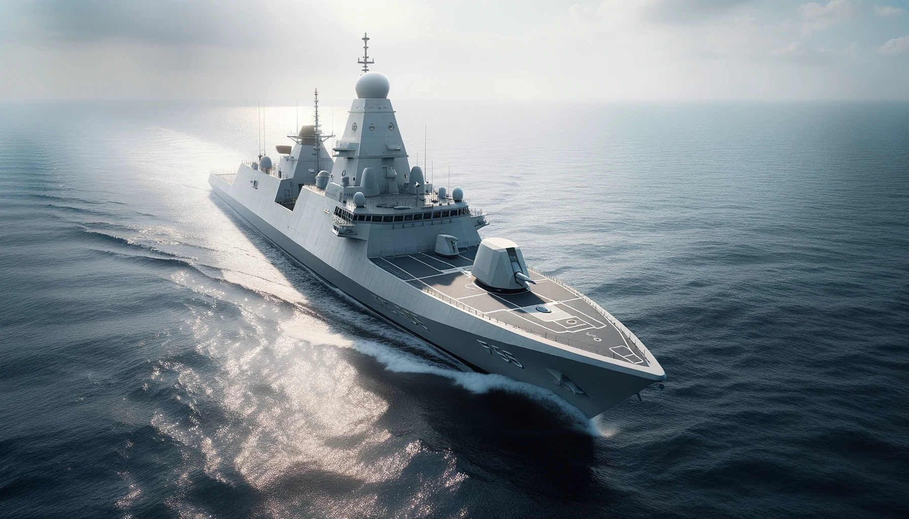

F-100
La Classe Álvaro de Bazán (F-100) és una classe de fragates
desenvolupades i construïdes per Navantia per a la Armada Espanyola.
Aquests vaixells són coneguts per la seva avançada tecnologia i les
seves capacitats antiaèries, sent les primeres fragates europees en
incorporar el sistema de combat Aegis d'origen nord-americà.
Característiques i punts destacats de la Classe Álvaro de Bazán
(F-100): Sistema Aegis: La característica més destacada d'aquestes
fragates és la seva incorporació del sistema de combat Aegis, que les
dota d'una gran capacitat de defensa antiaèria i antimíssil. Disseny
modern: Amb un disseny stealth per reduir la seva signatura radar, les
fragates F-100 estan equipades amb tecnologia moderna per afrontar
amenaces navales contemporànies. Armament versàtil: Estan armades amb
míssils SM-2, torpedes, un canó de 5 polzades, míssils antibuque
Harpoon i el sistema de defensa propera Meroka, entre d'altres.
Helicòpters embarcats: Les fragates F-100 tenen capacitat per operar
amb helicòpters, com l'NH90 o el SH-60 Seahawk, potenciant les seves
capacitats ASW (Anti-Submarine Warfare). Desenvolupament i
construcció: La primera unitat, l'Álvaro de Bazán (F-101), va ser
botada l'any 2000 i va entrar en servei el 2002. Des d'aleshores,
s'han construït altres unitats d'aquesta classe. Operacions
internacionals: Les fragates F-100 han participat en diverses missions
i operacions internacionals, com ara operacions de l'OTAN o missions
antipirateria a l'Oceà Índic. Influència internacional: El disseny de
la classe F-100 ha influenciat altres projectes de fragates, com la
classe Hobart de l'Armada Australiana. Futur i modernització: La
Armada Espanyola continua modernitzant aquestes fragates per
mantenir-les a la vanguarda tecnològica i assegurar la seva eficàcia
en futures missions. La Classe Álvaro de Bazán (F-100) representa un
gran pas endavant en termes de capacitats navales per a la Armada
Espanyola, oferint una combinació d'avançada tecnologia, versatilitat
i potència de foc en un paquet modern i eficient.